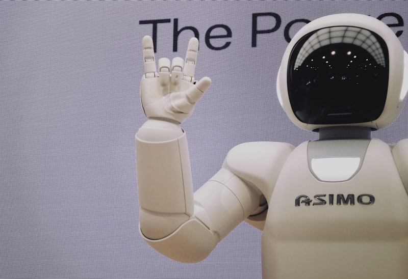

The "StatefulSet Hack" Era Is Over
How we used to run agents, and why every existing solution is a workaround.

How We Got Here
Let's be honest: Kubernetes was never designed for AI agents. It was designed for stateless web services that scale horizontally and databases that scale vertically with ordered names. AI agents are neither.
An agent is a single thing that runs for a long time, needs to remember state, executes arbitrary and often untrusted code, and must pick up exactly where it left off. You don't scale it by adding replicas — you run thousands of separate singletons.
So what did we do? We improvised. And by "improvised," I mean we duct-taped together solutions that would make any platform engineer weep:
- Docker Socket or DinD Sidecar — Your orchestrator spins up sub-agents by talking directly to the Docker socket. If you're running on a VM, that's one thing. If you're in Kubernetes, you mount a Docker-in-Docker sidecar inside a pod and pray the security team never audits it. Vertical scaling only. Slow starts. Questionable isolation. 🙈
- StatefulSet Hacks — Deploy a StatefulSet with
replicas: 1, attach a headless Service, and pretend it's a "singleton sandbox." It works until you need lifecycle controls, fast scaling, or anything resembling modern platform engineering. Then it becomes an operational nightmare. - Raw Deployments with PVCs — Even more brittle. Pods get rescheduled, identities shift, volumes don't follow cleanly, and you end up writing more bash scripts than YAML.
"Mapping these unique agentic workloads to traditional Kubernetes primitives requires a new abstraction." — Janet Kuo & Justin Santa Barbara, Kubernetes Blog
Every infrastructure feature on top of these workarounds — auto-scaling, secure isolation, network policies, cost optimization — is just another layer of hacks. And we all know how that ends: 3 AM pages, angry security reviews, and a Jira backlog titled "Agent Infrastructure: The Reckoning."
The Core Insight
AI agents need a new Kubernetes primitive. Not a hack on top of Deployments. Not a clever StatefulSet pattern. A first-class resource that understands what an agent actually is: a stateful, isolated, singleton workload with a lifecycle of its own.
What Is Kubernetes Agent Sandbox?
A declarative, CRD-based API that turns Kubernetes into an Agent Operating System.

At Google I/O 2026, alongside the expected Gemini 3.5 series and the impressive Omni multimedia model, Google quietly highlighted a piece of infrastructure that may end up being far more important for DevOps and AI engineers than any single model release.
It's called Kubernetes Agent Sandbox — an open-source project under Kubernetes SIG Apps that adds a dedicated controller and a family of CRDs to any Kubernetes cluster. The goal? To provide a native, declarative, standardized API for managing isolated, stateful, singleton workloads — built specifically for AI agent runtimes, coding environments, and untrusted code execution.
Instead of stitching together StatefulSets, Services, and PersistentVolumeClaims by hand, you describe the sandbox you want, and the controller handles the rest.
The Core CRDs
| CRD | Purpose | Analogy |
|---|---|---|
Sandbox |
The core resource: a single, stateful pod with stable hostname and optional persistent storage | A lightweight, single-container VM |
SandboxTemplate |
Reusable blueprint: image, resource limits, isolation runtime, policies | A PodTemplate, but agent-aware |
SandboxClaim |
Transactional request for a sandbox from a template; decouples users from provisioning logic | A PVC claim, but for environments |
SandboxWarmPool |
Pre-warmed pool of pods for near-instant allocation | A warm connection pool, but for compute |
The Sandbox resource looks almost like a regular Pod — intentionally so. You don't need to learn an alien API:
apiVersion: agents.x-k8s.io/v1alpha1
kind: Sandbox
metadata:
name: dynamic-ephemeral-sandbox
spec:
replicas: 1
shutdownPolicy: Delete
shutdownTime: "${SHUTDOWN_TIME}"
podTemplate:
spec:
containers:
- name: workspace
image: alpine:latest
command: ["sleep", "infinity"]But under the hood, this simple manifest gets you a workload with stable identity, persistent storage, lifecycle controls, and optional VM-grade isolation — none of which you'd get from a raw Pod or Deployment without significant effort.
Google is already running this in production. At I/O 2026, they announced 16x growth in GKE Agent Sandbox usage in under five months, with customers like LangChain and Lovable deploying millions of agents. The open-source project has also reached GA stability, making it ready for production environments.
Core Features: Beyond the One-Liner
What each feature actually does, why it matters, and how to configure it.

In my original Telegram post, I listed these features as bullet points. For a blog, we go deeper. Each feature below includes a real-world scenario, a configuration snippet, and the production angle you actually care about.
3.1 Stable Network Identity & Routing
Every Sandbox gets a stable hostname and network identity that persists across pod restarts, rescheduling, and even hibernation. This is not a headless Service workaround — it's built into the resource itself.
Why this matters: Multi-agent systems need to discover and talk to each other. If Agent A needs to call Agent B, it needs a DNS name that doesn't change when the underlying pod gets evicted or rescheduled. In traditional Kubernetes, you'd build a headless Service + StatefulSet combo. With Agent Sandbox, it's a first-class property.
Traffic routing is handled by the Sandbox Router — a high-speed proxy that reads the X-Sandbox-ID header and routes traffic to the correct internal Pod IP. This means external clients can address sandboxes directly without needing per-sandbox Services.
apiVersion: agents.x-k8s.io/v1alpha1
kind: Sandbox
metadata:
name: agent-a
spec:
podTemplate:
spec:
containers:
- name: agent
image: my-agent:latest
ports:
- containerPort: 8080
---
# The router automatically routes traffic with X-Sandbox-ID: agent-a
# No manual Service or Ingress needed for basic inter-agent communicationProduction use case: A distributed data pipeline where a "coordinator" agent dispatches tasks to "worker" agents. Workers come and go based on load, but the coordinator always reaches them via stable DNS. No service mesh required.
3.2 Persistent Volumes That Survive Everything
Agent workloads are inherently stateful. An agent installs packages, writes files, clones repos, and builds artifacts. When the pod restarts — whether due to eviction, node maintenance, or a failed health check — that state must survive.
Agent Sandbox integrates with standard Kubernetes storage but adds volume migration across nodes. When a sandbox is rescheduled to a different node, its PVC is detached and re-attached to the new pod automatically. No manual intervention. No init containers restoring from S3.
apiVersion: agents.x-k8s.io/v1alpha1
kind: Sandbox
metadata:
name: coding-agent
spec:
podTemplate:
spec:
containers:
- name: workspace
image: python:3.12-slim
volumeMounts:
- name: workspace-data
mountPath: /workspace
volumeClaimTemplates:
- metadata:
name: workspace-data
spec:
accessModes: ["ReadWriteOnce"]
resources:
requests:
storage: 10GiProduction use case: A coding assistant that runs pip install and clones a monorepo on first start. Without persistent volumes, every restart means reinstalling dependencies. With Agent Sandbox, the environment is warm and ready even after node migration.
3.3 Scheduled Deletion & Lifecycle Management
Agents are not web servers. They may be idle for hours between tasks. Leaving them running burns money and cluster resources. But destroying them loses state.
Agent Sandbox provides declarative lifecycle controls:
- Scheduled deletion — Set a TTL via
shutdownTimeandshutdownPolicy. The controller automatically cleans up the sandbox when time expires. - Pause / Resume (Hibernation) — Scale the pod to zero while preserving the PVC. On the next API call or network connection, the controller re-provisions the pod and re-mounts the same volume.
apiVersion: agents.x-k8s.io/v1alpha1
kind: Sandbox
metadata:
name: ephemeral-analyzer
spec:
shutdownPolicy: Delete
shutdownTime: "2026-05-28T02:00:00Z"
podTemplate:
spec:
containers:
- name: analyzer
image: analytics-runtime:latestProduction use case: A customer support agent that wakes up when a new ticket arrives, processes it, and then hibernates. You pay for compute only during active work, but state (ticket history, cached embeddings) is preserved. This is Agentic FinOps in action.
3.4 Snapshots & Native Branching
One of the most underappreciated features: snapshots. The controller can capture the full state of a running sandbox and restore it later. On GKE, this leverages GKE Pod Snapshots for full checkpoint/restore of running pods — including CPU and GPU workloads.
This gives you native branching of agent runtime. Imagine an agent that explores multiple solution paths: you snapshot at a decision point, try path A, roll back, try path B. No container image rebuilds. No complex Git state management.
# Snapshot a sandbox at a critical point
kubectl apply -f - <<EOF
apiVersion: agents.x-k8s.io/v1alpha1
kind: SandboxSnapshot
metadata:
name: agent-before-deployment
spec:
sandboxRef:
name: deploy-agent
EOF
# Later, restore from snapshot to branch the runtime
# The controller recreates the pod with identical filesystem and memory stateProduction use case: CI/CD agents that test deployment strategies. Snapshot before a risky canary, run the canary, roll back if metrics degrade. All within seconds, not minutes.
3.5 SandboxWarmPool: Sub-Second Cold Starts
The SandboxWarmPool extension pre-provisions a pool of "warm" pods. When a new sandbox is requested, the controller hands over an existing warm pod instead of scheduling a new one from scratch.
Google reports sub-second latency for fully isolated agent workloads and up to a 90% improvement over cold starts. For interactive agents — chatbots, coding assistants, real-time analytics — this is the difference between "feels instant" and "feels broken."
apiVersion: agents.x-k8s.io/v1alpha1
kind: SandboxWarmPool
metadata:
name: python-runtime-pool
spec:
templateRef:
name: python-sandbox-template
minSize: 5
maxSize: 50
scaleUpThreshold: 2
scaleDownDelay: 300Production use case: A code execution API serving thousands of concurrent users. Each user gets their own isolated sandbox. Without warm pools, you'd have a queue during traffic spikes. With warm pools, users get their environment in under a second.
Performance Numbers from Google Cloud
GKE Agent Sandbox delivers 300 sandboxes per second at sub-second latency on optimized node configurations. For context, a cold Docker container start on a busy cluster can take 10-30 seconds.
3.6 VM-Grade Isolation via gVisor & Kata Containers
Running untrusted, LLM-generated code in a standard container is like handing a loaded gun to a toddler and saying "don't pull the trigger." The code is unpredictable. It might delete files, exfiltrate data, or try to escape the container.
Agent Sandbox is runtime-agnostic. You can pair it with gVisor for userspace kernel interception, or Kata Containers for hardware-enforced microVM isolation. Both are configured via standard Kubernetes runtimeClassName — no proprietary lock-in.
apiVersion: agents.x-k8s.io/v1alpha1
kind: SandboxTemplate
metadata:
name: secure-python-template
spec:
runtimeClassName: gvisor
podTemplate:
spec:
containers:
- name: workspace
image: python:3.12-slim
resources:
limits:
cpu: "2"
memory: "4Gi"
securityContext:
runAsNonRoot: true
readOnlyRootFilesystem: trueProduction use case: A multi-tenant SaaS platform where customers upload Python scripts for data analysis. Each script runs in a gVisor-backed sandbox. Even if a malicious script attempts a container escape, it hits the gVisor userspace kernel — not the host kernel. Your security team sleeps better.
On GKE, this is even simpler: managed gVisor is built into GKE Sandbox, the same technology that secures Gemini itself.
3.7 Programmatic SDK Integration
And now, the killer feature. You don't need to write YAML by hand. You deploy sandboxes directly from your application code using the official Python or Go SDKs.
from k8s_agent_sandbox import SandboxClient
client = SandboxClient()
sandbox = client.create_sandbox(
template="python-sandbox-template",
namespace="default",
)
try:
result = sandbox.commands.run("echo 'Hello from Agent Sandbox!'")
print(result.stdout)
# Hello from Agent Sandbox!
finally:
sandbox.terminate()The Python SDK supports multiple connection modes:
- Gateway Mode — For production: traffic flows through a Cloud Load Balancer and Kubernetes Gateway API.
- Tunnel Mode — For local development: uses
kubectl port-forwardunder the hood. - In-Cluster Mode — For workloads running inside the cluster: direct pod IP or cluster DNS.
- Async Client — For FastAPI, aiohttp, and async agent orchestrators.
Production use case: A LangChain-based agent that dynamically creates a sandbox for each user session, executes generated code inside it, streams results back, and terminates the sandbox on session end. All from Python. No YAML touchpoints for the application developer.
How It Works Under the Hood
The claim model, warm pools, and routing in one flow.
Agent Sandbox follows the standard Kubernetes controller pattern. A user (or an application via SDK) creates a SandboxClaim against a SandboxTemplate. The controller resolves the claim by either:
- Handing over a pre-warmed pod from a
SandboxWarmPool(fast path, <1 second) - Provisioning a new pod from scratch (slow path, 10-30 seconds)
Once assigned, the Sandbox Router provides a stable endpoint. External traffic hits the router with an X-Sandbox-ID header; the router tunnels to the correct Pod IP. The sandbox persists until its TTL expires, it's explicitly deleted, or it's hibernated due to idle timeout.
↓
SandboxClaim created against SandboxTemplate
↓
Controller checks SandboxWarmPool?
├─ Yes → Hand over warm pod (<1s) ──→ Ready
└─ No → Schedule new pod ──→ Wait ──→ Ready
↓
Sandbox Router routes traffic via X-Sandbox-ID
↓
Agent runs → Idle → Hibernation (scale to 0, PVC kept)
↓
Resume on next request → Or delete on TTL expiry
This architecture decouples the user's intent ("I need a Python sandbox") from the infrastructure reality ("which node, which runtime, which pool"). Platform teams define templates and pools; developers just claim what they need.
Real-World Use Cases
Where Agent Sandbox shines today.
Code Execution APIs
Run untrusted, LLM-generated code in isolated sandboxes. Ideal for code interpreters, analytics tools, and on-demand computation. Each request gets its own environment.
Coding Agents
Autonomous agents that write, debug, and refactor code inside secure sandboxes with persistent dev tooling. State survives across iterations.
Computer Use
AI agents that interact with graphical desktops, browsers, and GUI apps inside isolated sandboxes. Think "agent-operated Chrome" for web tasks.
CI/CD Pipelines
Isolated testing and validation environments for each PR. No more "works on my machine" — every build runs in a fresh, reproducible sandbox.
Notebooks & Research
Persistent JupyterLab or VS Code sessions for data scientists. Packages, datasets, and in-progress experiments survive restarts.
Multi-Agent Orchestration
Coordinated agent swarms where each agent has stable identity and can discover peers via DNS. No service mesh complexity required.
Production Considerations & Guardrails
How not to get paged at 3 AM.
Agent Sandbox is powerful, but power without guardrails is just a faster way to break things. Here's what you need to think about before going to production.
Network Security
GKE Agent Sandbox implements a Default Deny network posture. Sandboxes cannot talk to unauthorized internal networks or the control plane by default. You define explicit egress/ingress rules in the SandboxTemplate.
apiVersion: agents.x-k8s.io/v1alpha1
kind: SandboxTemplate
metadata:
name: restricted-python
spec:
podTemplate:
spec:
containers:
- name: workspace
image: python:3.12-slim
networkPolicy:
egress:
- to:
- namespaceSelector:
matchLabels:
name: allowed-apis
ports:
- protocol: TCP
port: 443Resource Quotas & OPA
Standard Kubernetes resource quotas apply, but you should also enforce policies at admission. The project provides examples for OPA Gatekeeper and Validating Admission Policies to prevent users from requesting sandbox templates with privileged security contexts or excessive resources.
Monitoring & Observability
The controller exports creation latency metrics and supports OpenTelemetry tracing. Track warm pool hit rates, hibernation cycles, and sandbox lifetime to optimize both cost and user experience.
Node Groups & Taints
Sandboxes with gVisor or Kata Containers have specific node requirements. Use Kubernetes node selectors, taints, and tolerations to dedicate node pools for sandbox workloads — keeping them off your production service nodes.
What the Community Is Saying
Reviews, analyses, and early adopter feedback.
Agent Sandbox hasn't gone unnoticed. Here's what engineers, bloggers, and infrastructure vendors have said about it.
"Agent Sandbox fills a gap that raw Kubernetes primitives do not cover natively: managing long-running, stateful, singleton workloads with stable identity, lifecycle controls (pause, resume, scheduled deletion), and strong isolation for untrusted code execution." — Northflank Engineering Blog
"If you give an AI Agent a terminal, you've given it a loaded gun. Kubernetes just built the safety lock." — Ramesh, Towards AI
"By the end of 2026, 40% of enterprise applications are expected to run embedded task-specific agents. Mapping these unique agentic workloads to traditional Kubernetes primitives requires a new abstraction." — Joab Jackson, Cloud Native Now, citing Ben Wheatley (incident.io)
"The architectural model of consuming AI is shifting from stateless inference to stateful execution environments interacting with external tools. This is fundamentally changing the security posture required to operate these systems." — Pradipta Banerjee, startup advisor
"The Agent Sandbox CRD is a necessary foundation — not a complete answer. For organizations deploying AI agents with real autonomy in production, you still need behavioral awareness beyond the container boundary." — Shauli Rozen, ARMO (Kubescape)
Northflank, a container platform provider, has been running similar workloads in production since 2021 and notes that while Agent Sandbox provides the isolation primitive, surrounding infrastructure — autoscaling, multi-tenancy, bin-packing — still requires operational expertise.
On the adoption front, Google reports that Lovable — which empowers users to build apps and websites with AI — runs these AI-generated applications in GKE Agent Sandboxes because of the fast startup, fast scaling, and secure isolation. They process 200,000+ new projects daily.
Google I/O 2026 & The Roadmap Ahead
From GA to Agent Substrate: what's next.
At Google I/O 2026, Agent Sandbox wasn't just mentioned in passing. It was positioned as a foundational layer for Google's broader agent strategy:
- GKE Agent Sandbox is now GA — Generally available with managed controller lifecycle, automatic upgrades, and security patches.
- Managed Agents API — Google's new "agent-as-a-service" offering uses Agent Sandbox under the hood for secure, ephemeral execution environments.
- Antigravity 2.0 & CLI — Google's agent-first development platform now includes built-in terminal sandboxing and hardened Git policies, with Agent Sandbox as the runtime.
But Google didn't stop there. They also introduced Agent Substrate — a new open-source project aimed at pushing the limits of agentic infrastructure density. While standard Kubernetes is optimized for thousands of long-running services, Agent Substrate is designed for millions of sub-second tool calls that would otherwise overwhelm a standard control plane.
The SIG-Apps roadmap also includes:
- Firecracker & QEMU Support — Hardware-level MicroVM isolation for the Sandbox API.
- Ray & CrewAI Integration — Native plug-and-play support for popular agent frameworks.
- Pydantic-based Process Isolation — Lighter-weight sandboxing where full kernel isolation isn't required.
- Memory Sharing — Exploring memory sharing across sandboxes on the same host for homogeneous workloads.
In short: this is not a flash-in-the-pan SIG project. It's the beginning of a fundamental shift in how Kubernetes thinks about workloads.
Key Takeaways
Stop hacking. Deployments and StatefulSets were never meant for agent workloads. Agent Sandbox is the first native primitive designed for stateful, singleton, isolated runtimes.
Sub-second starts. SandboxWarmPool eliminates cold starts with pre-warmed pods — up to 90% faster than provisioning from scratch.
Isolation is a choice. gVisor, Kata Containers, or standard runtimes — configured via runtimeClassName, not proprietary APIs.
State survives everything. Persistent volumes, snapshots, hibernation, and resume mean agents pick up exactly where they left off.
Production-ready. GA on GKE, open-source and community-driven, with SDKs for Python and Go.
Do a PoC. If you're still running agents in DinD sidecars or StatefulSet hacks, it's time to build a demo and show your architect.
Where to Start
- Official Getting Started Guide
- GitHub Repository
- Kubernetes Blog: Running Agents on Kubernetes with Agent Sandbox
- GKE Agent Sandbox Documentation
- Examples & Runtime Templates
Happy sandboxing, colleagues. May your agents be isolated, your pools warm, and your cold starts a thing of the past. 🛡️